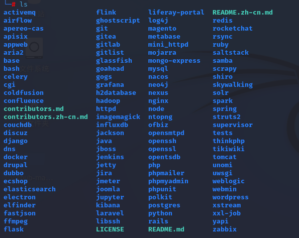
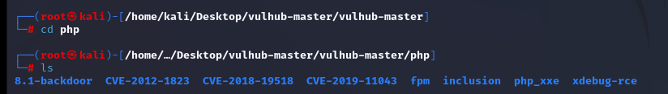
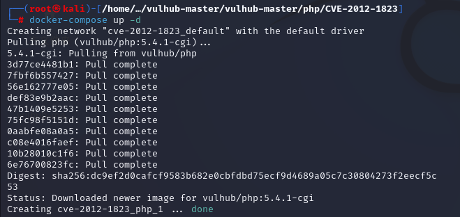
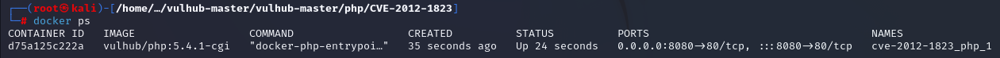

注意：此搭建只能使用 Linux 方法，强烈建议使用 Kali。
需要先安装 Docker，参考相关教程进行 Docker 安装与配置。
安装 docker-compose
直接在命令行里面输入 docker-compose 会询问是否下载，输入 y 即可。
Vulhub 搭建
bash
git clone https://github.com/vulhub/vulhub.git
用不了的可以去 GitHub 直接下载原文件。下载完后直接进入 vulhub 的文件夹内，这里面的文件夹就是靶场了，大多数的靶场只需要一条命令就能完成搭建。
以 php 下的 CVE-2012-1823 为例：

bash
cd php/
cd CVE-2012-1823
docker-compose up -d
下载完成之后就能进行下一步了。查看端口：
bash
docker ps
此刻搭建完成，直接访问即可。